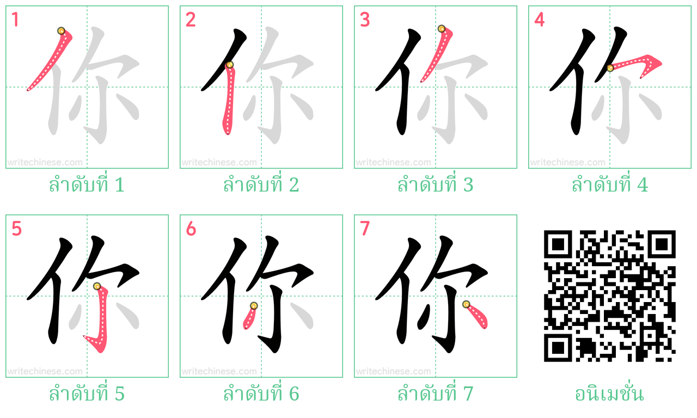

ต้องเริ่มที่ลำดับขีด
การเขียนอักษรจีนให้สวยงามและเป็นระเบียบ เริ่มต้นจากการแม่นยำเรื่องลำดับขีด การจัดสัดส่วนช่องไฟ และการควบคุมน้ำหนักของเส้นอักษรในสมุดคัด จะมีหลักการและเทคนิคพื้นฐานดังนี้1.ลำดับขีด (Stroke Order): ต้องเขียนตามกฎสากล เช่น จากบนลงล่าง จากซ้ายไปขวา และขวางก่อนตั้งเสมอ เพื่อให้ตัวอักษรมีความสมดุล
2.น้ำหนักของเส้น (Weight): อักษรจีนที่ดีต้องมีจังหวะหนักและเบา (เปรียบเหมือนหยินและหยาง) ไม่ควรลากเส้นตรงทื่อเท่ากันทุกจุด
3.สัดส่วนและช่องไฟ: ตัวอักษรแต่ละตัวควรมีขนาดพอดีกับช่องตาราง ไม่กว้างหรือแคบจนเกินไป เส้นรอบนอกหรือโครงสร้างภายในต้องรับกัน